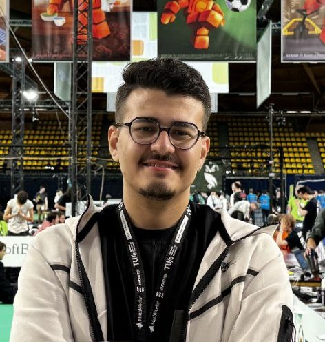
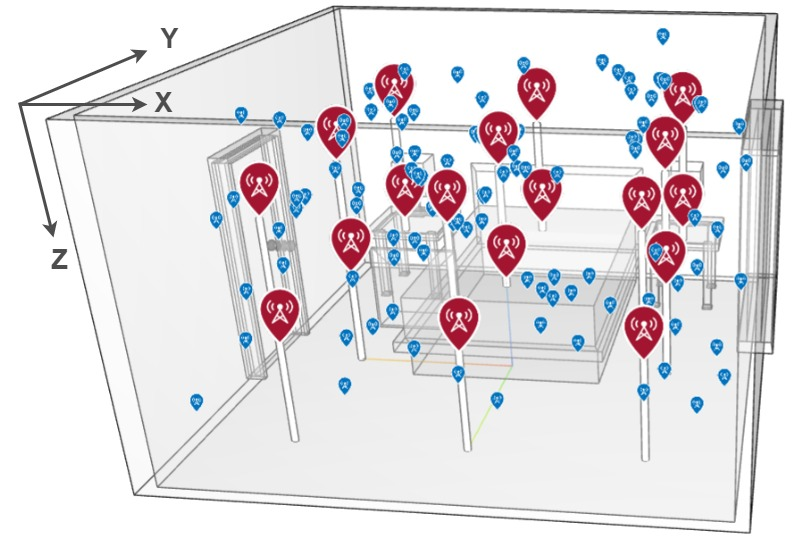

Armin Soleymani
Research Assistant · GrUVi Lab @ SFU · 3D Reconstruction · Generative Modeling
I am a Research Assistant at GrUVi Lab @ SFU, working under the supervision of Prof. Ali Mahdavi-Amiri. My research lies in computer graphics, with a focus on single-view 3D reconstruction, primitive fitting, and generative modeling.
Prior to joining SFU, I completed my B.Sc. in Electrical Engineering, majoring in Telecommunication, at Amirkabir University of Technology. I am broadly interested in methods that connect geometric reasoning with learning-based generation, and I enjoy creating 3D objects while exploring how computational tools can support digital modeling, visual content creation, and interactive graphics.

Publications

RadarPose: Frequency-Domain Diffusion for mmWave Radar-Based Human Pose Estimation
Under Preparation
This work develops a diffusion-based framework for human pose estimation from mmWave radar signals. By operating in the frequency domain, the model is designed to capture global motion structure while suppressing high-frequency radar noise. It further integrates spatio-temporal representations with diffusion models and graph convolutional networks to improve joint localization in challenging conditions such as occlusion.

FiReT: A Neural Radiance Fields Framework for Wireless Field Reconstruction and Transmitter Placement
IKT, 2025
FiReT introduces a NeRF-based framework for learning a continuous representation of indoor wireless radiation fields from sparse receiver measurements. By modeling how the field changes across candidate transmitter locations, the method estimates wireless channels at unseen spatial points and evaluates deployment scenarios without exhaustive site surveys. This Neural Radiance Fields formulation enables scalable wireless field reconstruction and supports the selection of transmitter placements that provide robust coverage in complex indoor environments.
Research Experience
GrUVi Lab @ Simon Fraser University
Research Assistant
Supervised by Prof. Arash Mahdavi-Amiri, conducting research on 3D shape reconstruction and primitive fitting.
Microwave Measurement Lab @ Amirkabir University of Technology
Research Assistant
Supervised by Prof. Gholamreza Moradi, conducting research on NeRF-based wireless scene reconstruction and channel estimation, as well as human pose estimation using radar signal processing.
Iran Telecommunication Research Centre (ITRC)
Research Intern
Worked on deep learning–based image segmentation for estimating cultivated areas of strategic crops. Developed a GAN-based augmentation pipeline to enrich satellite imagery datasets and integrated real and synthetic images into a U-Net model for improved land segmentation.
Honors & Awards
Ranked among the top 1% in the university entrance exam
Achieved a top 1% ranking among more than 142,000 participants.
1st Place – RoboCup Salvador 2025, Rescue Line League
RoboCup Federation.
1st Place – RoboCup Sydney 2019, Rescue Line League
RoboCup Federation.
2nd Place – RoboCup Eindhoven 2024, Rescue Line League
RoboCup Federation.
1st Place – FIRA RoboWorld Cup Taichung City 2018
Federation of International Robot-Sport Association.
Work Experience
Benis Food Industries Company
Machine Vision and Automation Developer
Designed a machine vision system for detecting and classifying objects on a cake packaging line, and integrated object detection with Festo pneumatic actuators to support precise separation and automated packaging operations.
RoboDanesh Robotic Academy
Robotics Instructor
Taught and mentored students in Python programming for image processing, C++ programming with AVR controllers and Arduino, and electronic board design for robotics projects and competitions.
Education
Simon Fraser University
M.Sc. in Computing Science
Amirkabir University of Technology
B.Sc. in Electrical Engineering (Telecommunication)
Danesh High School
Diploma, Mathematics & Physics
Teaching & Service
Teaching Assistant
Filter and Synthesis — Prof. Zahra Seifi Jan. 2025 – Apr. 2025
Communication Systems — Prof. Yaser Norouzi Jan. 2025 – Apr. 2025
Logical Circuits — Prof. Zahra Shariatmadar Jan. 2025 – Apr. 2025
Electromagnetics — Prof. Amirnader Askarpour Sep. 2024 – Jan. 2025
Robotics Competition Technical Committee Member
RoboCup 2025 — Salvador
RoboCup 2024 — Eindhoven
RoboCup IranOpen 2025 — Tehran
RoboCup IranOpen 2024 — Tehran
Outside Research
Add here your text — describe what you enjoy doing outside of research.